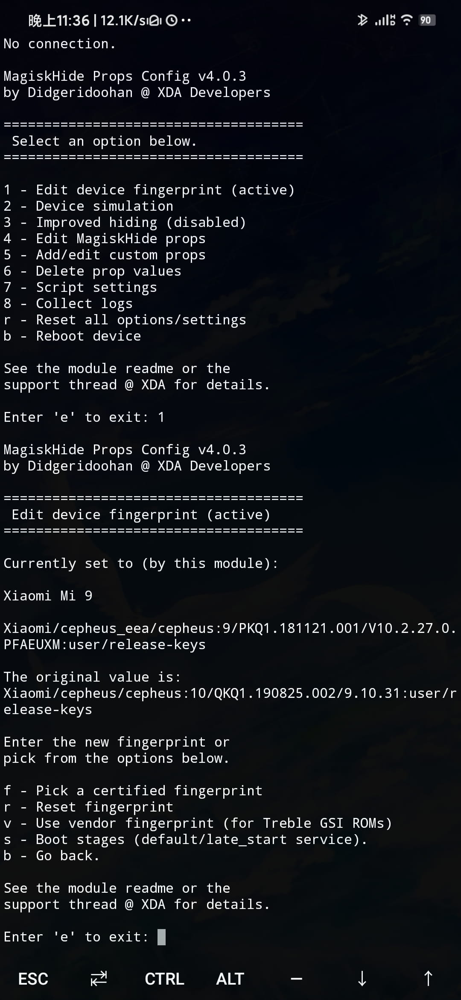
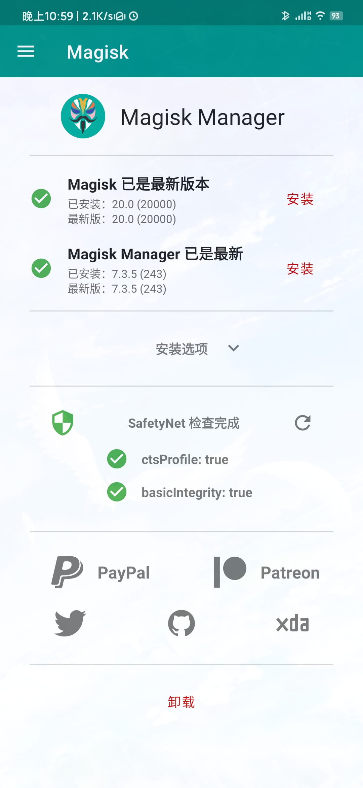
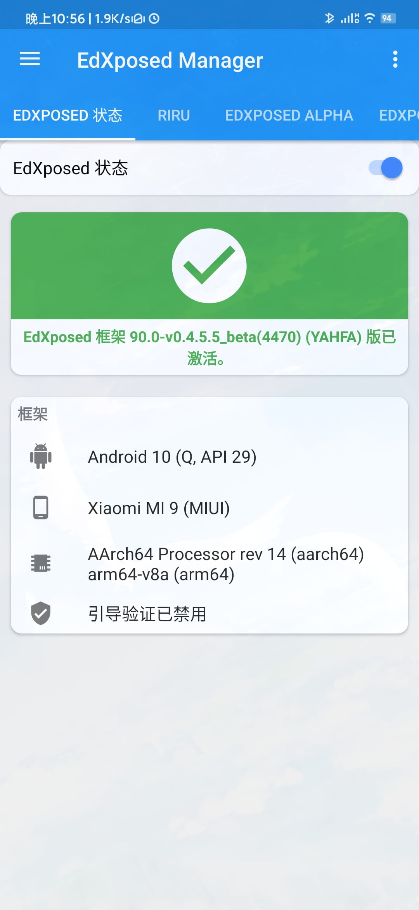

Android手机通过ctsProfile 检测
简单来讲， 它就是一个google play里的一个验证service ，涉及到Google的GTS验证了，因为oem厂商要预装Google服务，必须通过Google的GTS测试才可以预装GMS服务，通过测试的机器Google服务器上会有你的设备型号，买回来开机激活后会显示 “此设备通过验证”，也就是通过了safetytest了，就可以完美使用Google pay非接触式付款，下载特殊的app例如Netflix一系列有版权保护的app。
大部分国产Android手机刷入Magisk Manager进行root权限管理时都是可以做到隐藏 root 实现 「无痛」 玩机的，一般来讲 basic integrity ， ctsProfile 都是通过检查的。但是有些设备并不是，那说明你的 ROM 没有通过其兼容性测试，一些 beta 版本或者国内厂商的 ROM 可能出现这种问题，或者刷入xposed后ctsProfile 肯定是不通过的。这时候就需要用到 MagiskHide Props Config 这个模块 。
安装MagiskHide Props Config模块
从Magisk Manager下载直接搜索安装即可，需要重启。
MagiskHide Props Config模块设置
使用Termux之类的终端工具进行设置， 使用 su 切換到 root 身份，接著執行 props
接着按下1 出现下面的提示

然后根据自己设备型号输入cts指纹，注意只输入=后面的部分
然后一路yes重启即可。


之后就可以安装netflix，google pay（大陆没什么卵用😒）之类的应用了。
补充说明下，本人mi9一切正常，其他设备请自测。
📖 参考资料